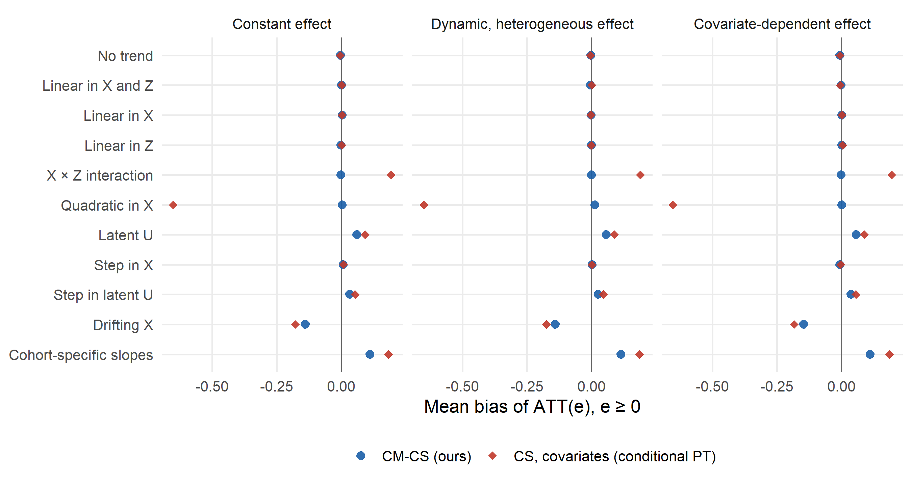
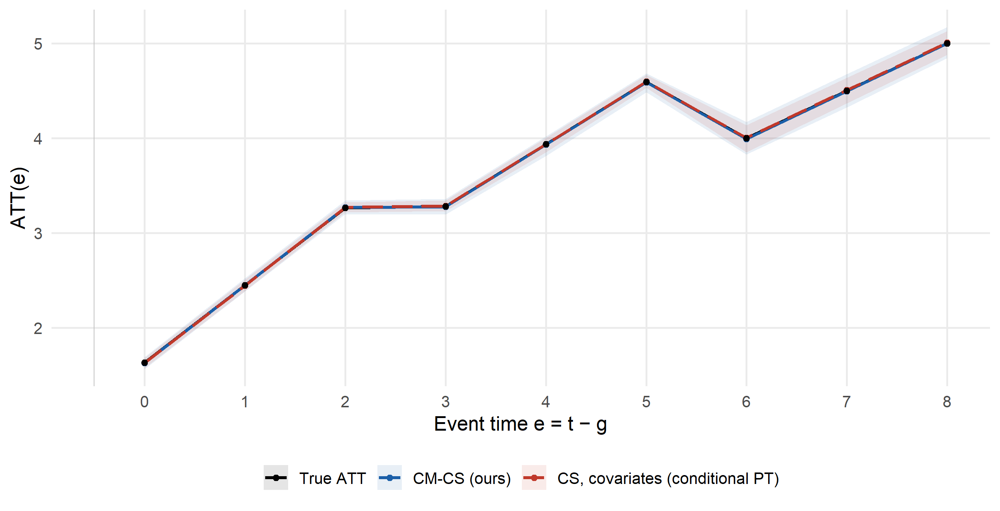
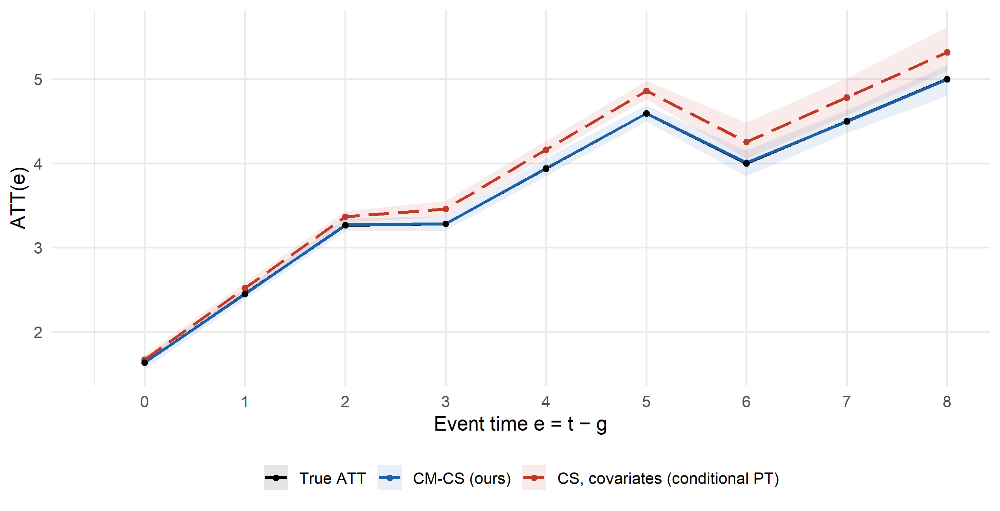
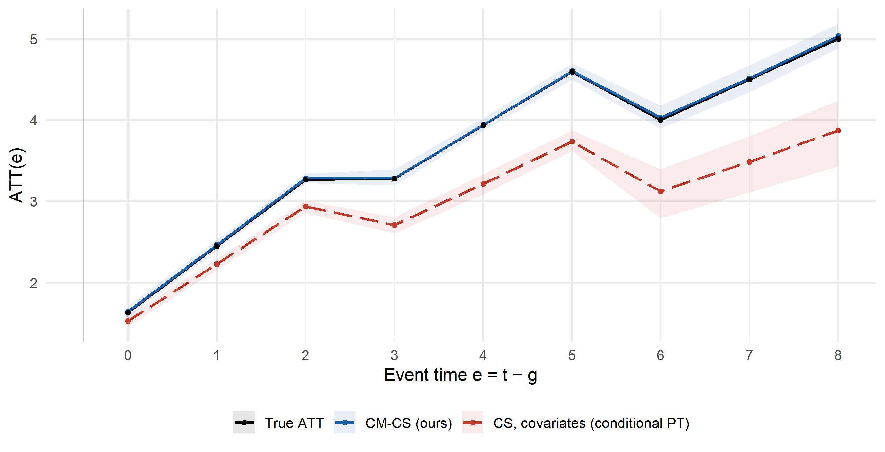
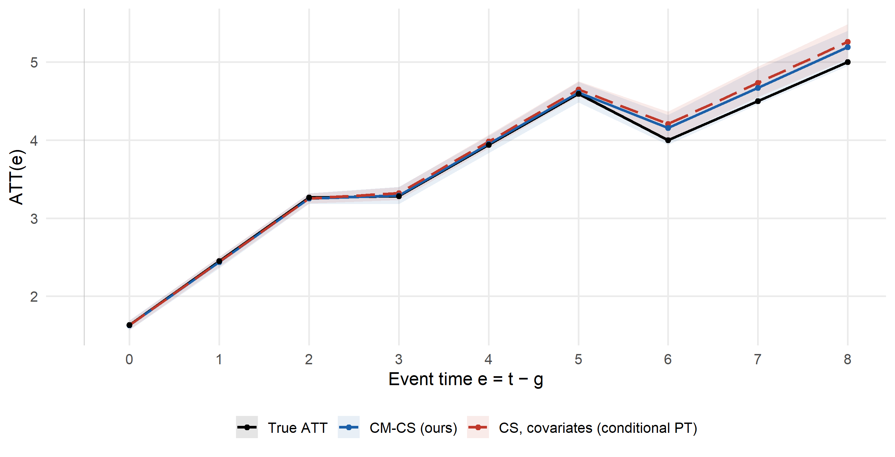
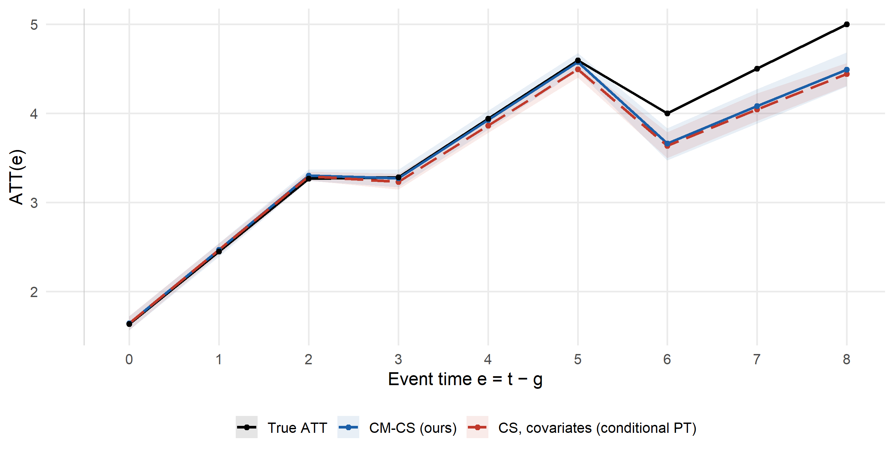

Matching vs. conditioning
When conditional parallel trends with covariate adjustment gives the same answer, and when it does not
Two routes to the same identifying assumption
The cohort-matched estimator rests on conditional parallel trends: within cohort \(g\), treated and never-treated units with the same pre-treatment covariates \(X^{(g)}_i\) would have followed the same untreated trend. Matching is one way to estimate the counterfactual trend under this assumption. The other is to keep all never-treated units and adjust for covariates directly, as in the doubly robust estimator of Callaway & Sant’Anna (2021) with covariates \(X\) and \(Z\) (CS, covariates). It combines a linear outcome regression for the untreated trend with a propensity score for cohort membership.
Both routes target the same parameter. They differ in how they estimate the conditional expectation \(\mu^{g}_{\Delta,t}(x) = \mathbb{E}[Y_t - Y_{g-1}\mid G=\infty, X^{(g)}=x]\): matching is nonparametric, while covariate adjustment relies on a working model.
An implementation identity
Take the matched sample and run CS with never-treated controls, conditioning on a set of dummies for the cohort each control was matched to. This reproduces CM-CS exactly: across all designs and patterns on this site, the two event-study estimates differ by at most 9e-16. With a saturated label, conditioning reduces to restricting each cohort to its own matched controls. This is an identity between two estimators, and a useful check on an implementation. It is not an identifying assumption: the label is produced by the matching in a given sample, not a characteristic of the population. The pooled matched estimator is the same regression without the label, and its bias is the cost of dropping it.
When covariate adjustment delivers the same answer
When the untreated trend is linear in the observed covariates (Linear in X and Z, Linear in X, Linear in Z, Step in X), the working model is correctly specified. Covariate adjustment is then unbiased, like matching, and a little more precise because it uses every never-treated unit:
| Untreated trend | Trend term | CM-CS (ours) | CS, covariates (conditional PT) |
|---|---|---|---|
| No trend | \(0\) | -0.002 [0.052] | -0.002 [0.042] |
| Linear in X and Z | \((0.2X+0.2Z)\,t\) | -0.003 [0.059] | 0.002 [0.046] |
| Linear in X | \(0.2\,X t\) | -0.001 [0.061] | -0.002 [0.049] |
| Linear in Z | \(0.2\,Z t\) | 0.001 [0.055] | 0.000 [0.046] |
| Step in X | \(X\,\mathbf{1}(t\ge 8)\) | 0.003 [0.055] | 0.003 [0.046] |
Cells: mean bias of ATT(e) over e ≥ 0 [RMSE]. Shading by |bias|: < 0.020.02–0.050.05–0.100.10–0.50≥ 0.50 Monte Carlo standard error of a bias cell: 0.002–0.013 (median 0.004).
The cost of matching
One-to-one matching keeps one control per treated unit and discards the rest of the never-treated reservoir. When the covariate-adjusted model is correctly specified, that loss shows up as lower precision. With no trend, or a trend linear in \(X\) and \(Z\), CS with covariates has an RMSE about a fifth lower than CM-CS, and narrower replication bands. Once the working model is misspecified, its bias dominates and the ranking reverses.
| Untreated trend | CM-CS (ours) | CS, covariates (conditional PT) | CS, pooled matched sample |
|---|---|---|---|
| No trend | 0.052 [0.206] | 0.042 [0.158] | 0.040 [0.152] |
| Linear in X and Z | 0.059 [0.224] | 0.046 [0.171] | 1.119 [0.265] |
| X × Z interaction | 0.058 [0.216] | 0.204 [0.262] | 0.377 [0.272] |
| Quadratic in X | 0.059 [0.209] | 0.657 [0.357] | 1.746 [0.260] |
| Latent U | 0.104 [0.265] | 0.118 [0.234] | 0.328 [0.228] |
Cells: RMSE of ATT(e), averaged over e ≥ 0 [mean width of the central 95% band of the replications].
Matching therefore buys robustness to the functional form of the trend, at a price in variance when that functional form is known.
Where covariate adjustment breaks down
Covariate adjustment needs the functional form of the trend to be right; matching does not.
- Misspecified functional form. With an interaction (X × Z) or a quadratic (Quadratic in X) trend, the linear working model is wrong and the estimator is biased. Under the quadratic trend the bias is large, because the cohorts have little overlap in \(X\) and the linear model has to extrapolate across cohorts. Matching compares units with nearby covariate values and is unaffected here, because the never-treated reservoir is drawn to cover each cohort’s covariate distribution. If the control pool itself overlapped poorly with a cohort, matching would suffer too, through poorer matches.
- Latent or moving trend drivers. Under a latent trend or drifting covariates both approaches are biased, and covariate adjustment more so in our designs.
Adding the right interactions or polynomial terms would repair the covariate-adjusted estimator, but only if the researcher knows which ones to add.
Untreated trend linear in X and Z: \((0.2X+0.2Z)\,t\).

Untreated trend driven by the interaction X × Z: \(0.2\,XZ\,t\).

Untreated trend quadratic in X: \(0.1\,X^2 t\).

Linear trend in a latent, cohort-correlated characteristic U: \(0.25\,U t\).

Trend in X, with X drifting at cohort-specific rates after matching: \(0.2\,X_{it}\,t\).

| Untreated trend | Trend term | CM-CS (ours) | CS, covariates (conditional PT) |
|---|---|---|---|
| X × Z interaction | \(0.2\,XZ\,t\) | 0.001 [0.058] | 0.191 [0.204] |
| Quadratic in X | \(0.1\,X^2 t\) | 0.013 [0.059] | -0.648 [0.657] |
| Latent U | \(0.25\,U t\) | 0.058 [0.104] | 0.090 [0.118] |
| Step in latent U | \(U\,\mathbf{1}(t\ge 8)\) | 0.026 [0.073] | 0.047 [0.076] |
| Drifting X | \(0.2\,X_{it}\,t\) | -0.140 [0.179] | -0.174 [0.198] |
| Cohort-specific slopes | \(\delta_g\, t\) | 0.114 [0.147] | 0.186 [0.206] |
Cells: mean bias of ATT(e) over e ≥ 0 [RMSE]. Shading by |bias|: < 0.020.02–0.050.05–0.100.10–0.50≥ 0.50 Monte Carlo standard error of a bias cell: 0.002–0.013 (median 0.004).